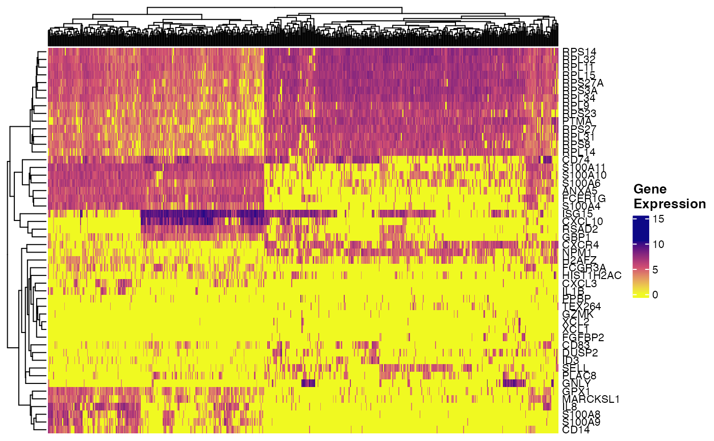
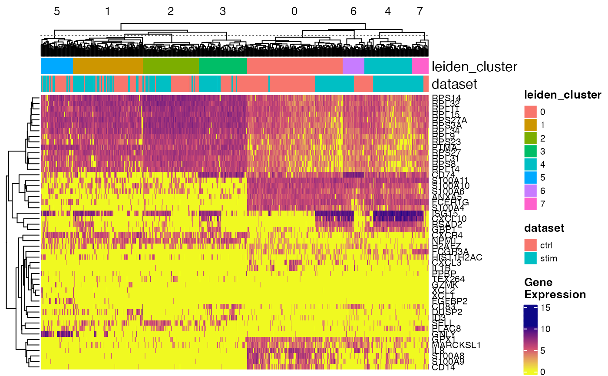
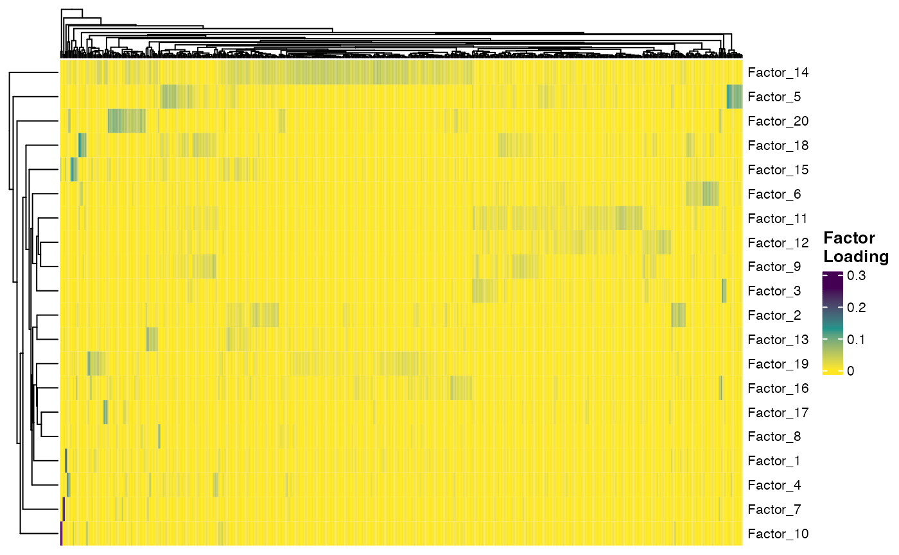
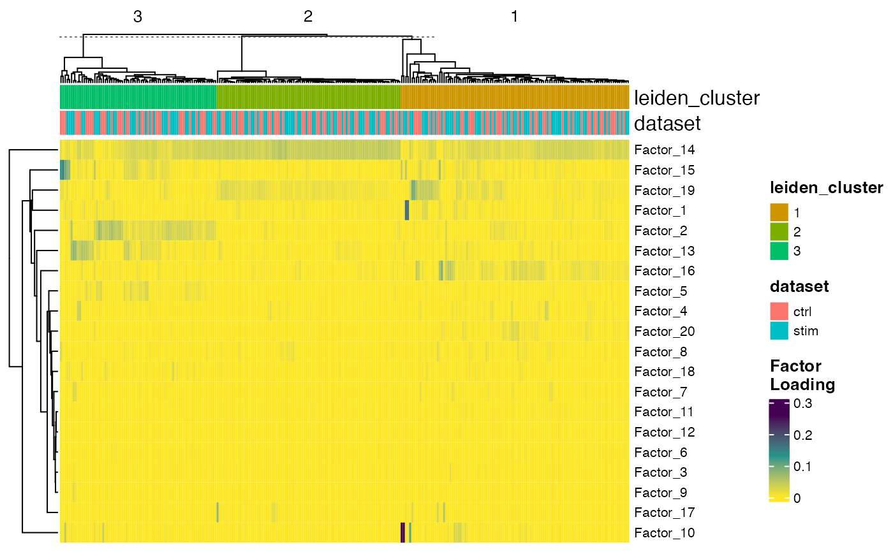

Plot Heatmap of Gene Expression or Factor Loading
Usage
plotGeneHeatmap(
object,
features,
cellIdx = NULL,
slot = c("normData", "rawData", "scaleData", "scaleUnsharedData"),
useCellMeta = NULL,
cellAnnotation = NULL,
featureAnnotation = NULL,
cellSplitBy = NULL,
featureSplitBy = NULL,
viridisOption = "C",
...
)
plotFactorHeatmap(
object,
factors = NULL,
cellIdx = NULL,
slot = c("H.norm", "H"),
useCellMeta = NULL,
cellAnnotation = NULL,
factorAnnotation = NULL,
cellSplitBy = NULL,
factorSplitBy = NULL,
trim = c(0, 0.03),
viridisOption = "D",
...
)Arguments
- object
A liger object, with data to be plot available.
- features, factors
Character vector of genes of interests or numeric index of factor to be involved.
featuresis required, whilefactorsis by default all the factors (reads object recorded k value inunsslot).- cellIdx
Valid index to subscribe cells to be included. See
subsetLiger. DefaultNULLuse all cells.- slot
Use the chosen matrix for heatmap. For
plotGeneHeatmap, default"normData", alternatively"rawData","scaleData"or"scaleUnsharedData". ForplotFactorHeatmap, default"H.norm", alternatively"H".- useCellMeta
Character vector of available variable names in
cellMeta, variables will be added as annotation to the heatmap. DefaultNULL.- cellAnnotation
data.frame object for using external annotation, with each column a variable and each row is a cell. Row names of this data.frame will be used for matching cells involved in heatmap. For cells not found in this data.frame,
NAs will be added with warning. DefaultNULL.- featureAnnotation, factorAnnotation
Similar as
cellAnnotation, while each row would be a gene or factor, respectively. DefaultNULL.- cellSplitBy
Character vector of variable names available in annotation given by
useCellMetaandcellAnnotation. This slices the heatmap by specified variables. DefaultNULL.- featureSplitBy, factorSplitBy
Similar as
cellSplitBy. DefaultNULL- viridisOption
See
optionargument ofviridis. Default"C"(plasma) forplotGeneHeatmapand"D"(viridis) forplotFactorHeatmap.- ...
Arguments passed on to
.plotHeatmaptransposeLogical, whether to "rotate" the heatmap by 90 degrees so that cell information is displayed by row. Default
FALSE.showCellLabel,showFeatureLabelLogical, whether to show cell barcodes, gene symbols or factor names. Default
TRUEfor gene/factors butFALSEfor cells.showCellLegend,showFeatureLegendLogical, whether to show cell or feature legends. Default
TRUE. Can be a scalar for overall control or a vector matching with each given annotation variable.cellAnnColList,featureAnnColListList object, with each element a named vector of R-interpretable color code. The names of the list elements are used for matching the annotation variable names. The names of the colors in the vectors are used for matching the levels of a variable (factor object, categorical). Default
NULLgenerates ggplot-flavor categorical colors.scaleLogical, whether to take z-score to scale and center gene expression. Applied after
dataScaleFunc. DefaultFALSE.baseSizeOne-parameter control of all text sizes. Individual text element sizes can be controlled by other size arguments. "Title" sizes are 2 points larger than "text" sizes when being controlled by this.
cellTextSize,featureTextSize,legendTextSizeSize of cell barcode labels, gene/factor labels, or legend values. Default
NULL.cellTitleSize,featureTitleSize,legendTitleSizeSize of titles of the cell slices, gene/factor slices, or the legends. Default
NULL.RColorBrewerOptionWhen
scale = TRUE, heatmap color will be mapped withbrewer.pal. This is passed toname. Default"RdBu".
- trim
Numeric vector of two numbers. Higher value limits the maximum value and lower value limits the minimum value. Default
c(0, 0.03).
Value
HeatmapList-class object
Examples
# \donttest{
plotGeneHeatmap(pbmcPlot, varFeatures(pbmcPlot))
#> ℹ Subsetting dataset: "ctrl"
#> ℹ Subsetting dataset: "stim"
#> ✔ Subsetting dataset: "stim" ... done
#>
#> ℹ Subsetting dataset: "ctrl"
#> ✔ Subsetting dataset: "ctrl" ... done
#>

plotGeneHeatmap(pbmcPlot, varFeatures(pbmcPlot),
useCellMeta = c("leiden_cluster", "dataset"),
cellSplitBy = "leiden_cluster")
#> ℹ Subsetting dataset: "ctrl"
#> ℹ Subsetting dataset: "stim"
#> ✔ Subsetting dataset: "stim" ... done
#>
#> ℹ Subsetting dataset: "ctrl"
#> ✔ Subsetting dataset: "ctrl" ... done
#>

plotFactorHeatmap(pbmcPlot)

plotFactorHeatmap(pbmcPlot, cellIdx = pbmcPlot$leiden_cluster %in% 1:3,
useCellMeta = c("leiden_cluster", "dataset"),
cellSplitBy = "leiden_cluster")

# }